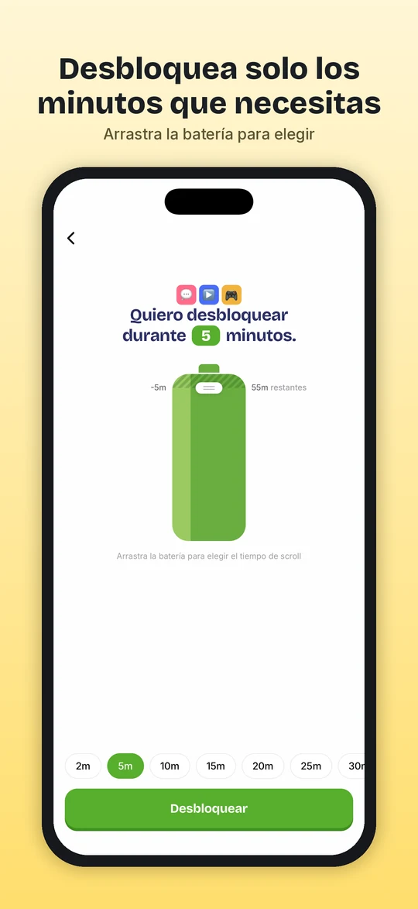

Cómo limitar el tiempo de pantalla en el iPhone
El iPhone ya trae una herramienta propia para limitar las apps, y a mucha gente le basta. Si te saltas esos límites una y otra vez, necesitas algo más difícil de ignorar. Aquí tienes las dos opciones.
Pon un límite con Tiempo de uso
En español, esta función de Apple se llama Tiempo de uso.
- Abre Ajustes → Tiempo de uso y actívalo si está desactivado.
- Entra en Límites de uso de apps, añade un límite, elige una categoría o apps concretas y fija un tiempo diario.
- Opcional: con Tiempo de inactividad programas horas en las que solo funcionan las apps que permitas.
- Opcional: un código de Tiempo de uso impide saltarte un límite con un toque.
Dónde se quedan cortos estos límites
Cuando se acaba el tiempo, iOS te ofrece un minuto más o ignorar el límite el resto del día. Sin código, eso está a un toque. Y un tope fijo no tiene en cuenta si por la mañana apenas usaste el móvil.
Lo que añade ScrollVolt
ScrollVolt usa los mismos frameworks de Apple, pero funciona como una batería. Las apps que eliges comparten una batería de scroll que se gasta mientras las usas y se recarga sola a lo largo del día. Para desbloquearlas, arrastras la batería hasta los minutos exactos que quieres: cada sesión empieza con una decisión. A cero, una pantalla tranquila sustituye a la app hasta que vuelve a haber carga. Una sesión de enfoque la carga el doble de rápido y el Reto de la Mitad baja tu límite diario poco a poco.


Preguntas frecuentes
¿Puedo limitar el tiempo de pantalla sin instalar otra app?
Sí. Los límites de uso de apps y el tiempo de inactividad vienen gratis con iOS y bastan si casi nunca los ignoras.
¿ScrollVolt sustituye a Tiempo de uso?
No. ScrollVolt se apoya en los frameworks de Tiempo de uso de Apple, así que ambos funcionan a la vez sin problema.
¿ScrollVolt sabe qué apps uso?
No. Apple solo le da tokens anónimos de tu selección, y todo funciona en tu iPhone: sin cuenta, sin rastreo, sin anuncios.
Prueba ScrollVolt en tu iPhone
ScrollVolt Premium es una suscripción anual con 3 días de prueba gratis que puedes cancelar cuando quieras en los ajustes de tu cuenta de Apple. ¿Prefieres pagar una sola vez? También hay un desbloqueo vitalicio.
Descárgalo en elApp Store